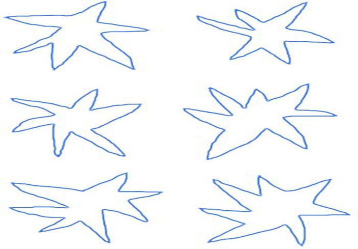
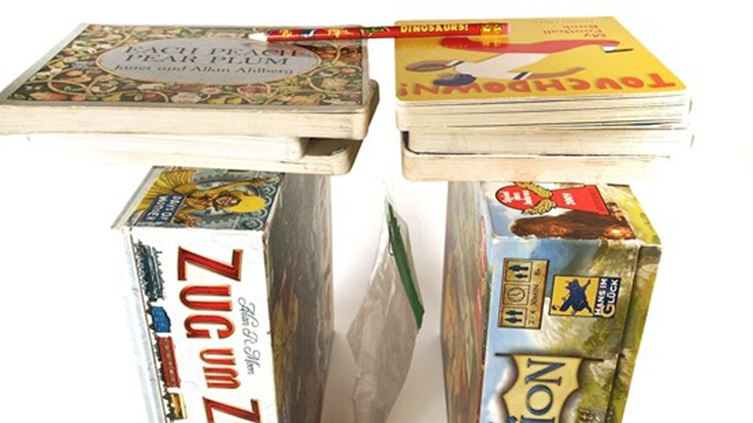

سرگرمی:
بوبا-کیکی اثر
خلاصہ:
تعارف:
اگر آپ کو کچھ شکلیں" "Boubaاور دوسروں کو " "Kikiکا نام دینا پڑے تو آپ کون سا نام نوکیلی شکل دیں گے؟ ایک گول شکل کے بارے میں کیا خیال ہے؟ کیا آپ کے دوستوں کے پاس بھی یہی جواب ہوں گے؟ اس سرگرمی میں، آپ شکلوں اور آوازوں کے درمیان انسانی دماغ کے دلچسپ تعلق کے بارے میں مزید جاننے کے لیے Bouba-Kiki اثر کی چھان بین کریں گے۔
مواد:
- ایک قلم، پنسل، یا مارکر۔ اگر آپ چاہیں تو آپ رنگین درجہ بندی استعمال کرسکتے ہیں!
- انڈیکس کارڈز (12)
- کاغذ کا ایک ٹکڑا
- رضاکار (متعدد)
تیاری کا کام:
- 6 انڈیکس کارڈز پر، ایک نوکیلی، ستارے جیسی شکل کھینچیں۔ فی کارڈ ایک شکل بنائیں۔
دیگر 6 انڈیکس کارڈز پر، گول، بلبلی شکلیں بنائیں۔ فی کارڈ ایک شکل بنائیں۔

- تمام کارڈز کو چند بار ایک ساتھ شفل کریں تاکہ انہیں بے ترتیب طور پر ملایا جا سکے۔
طریقہ کار
- اپنے پہلے رضاکار کو بتائیں کہ آپ انہیں کارڈز کی ایک سیریز دکھائیں گے، اور یہ کہ آپ جاننا چاہتے ہیں کہ تصویر بوبا ہے یا کیکی۔
- اگر وہ آپ سے تعریف طلب کرتے ہیں، تو صرف اس بات کی وضاحت کریں کہ انہیں اندازہ لگانا ہے اور فیصلہ کرنے کی پوری کوشش کرنا ہے۔
- اپنے رضاکار کو کارڈز دکھائیں، ایک وقت میں ایک۔
- کاغذ کے ٹکڑے پر، "متوقع" اور "غیر متوقع" جوابات کی تعداد کا حساب رکھیں۔ "متوقع" جوابات تب ہوتے ہیں جب رضاکار کیکی کے ساتھ نوکیلے، ستارے جیسی شکل یا بوبا کے ساتھ گول، بلبلی شکل کی شناخت کرتا ہے۔
رضاکار نے کتنے "متوقع" جوابات دیے؟ کیا رضاکار نے کوئی "غیر متوقع"، گول شکل کے ساتھ کیکی یا بوبا کو نوکیلی شکل کے ساتھ ملایا؟
- ان اقدامات کو کم از کم دو مزید رضاکاروں کے ساتھ دہرائیں۔ ہر بار انڈیکس کارڈ کے ایک ہی ڈیک کا استعمال کریں، لیکن اسے اس طرح شفل کریں کہ کارڈز بے ترتیب طور پر مل جائیں۔
- جب آپ فارغ ہو گئے تو، "متوقع" جوابات کی کل تعداد اور تمام رضاکاروں کے "غیر متوقع" جوابات کی کل تعداد کتنی تھی؟
کیا رضاکاروں نے زیادہ تر "متوقع" جوابات دیے؟
سرگرمی:
سرکلر ریزننگ: پائی تلاش کرنا
خلاصہ:
تعارف:
ریاضی دان اپنے ارد گرد کی دنیا کو اعداد اور فارمولوں کے لحاظ سے دیکھتے ہیں، اور اب، آپ Pi کا فارمولہ بھی دریافت کر سکتے ہیں! اس سائنسی سرگرمی میں آپ سرکلر اشیاء کا جائزہ لیں گے اور دیکھیں گے کہ آپ ان کے سائز کے بارے میں کیا دریافت کر سکتے ہیں۔ جیسا کہ آپ دریافت کریں گے، آپ حیران ہوں گے کہ نتائج کتنے مفید ہو سکتے ہیں—شاید یہ آپ کو بڑے پہیوں والی موٹر سائیکل کے لیے بچت کرنے کی ترغیب دے!
مواد:
- مختلف سائز کی کم از کم تین سرکلر اشیاء۔ بڑے سکے، گول کنٹینر کے ڈھکن، اور سائیکل کے پہیے اچھی طرح کام کرتے ہیں۔
- جڑواں یا ربن کا ایک رول جسے آپ چھوٹے ٹکڑوں میں کاٹ سکتے ہیں۔
- قینچی
- اختیاری: ٹیپ، جیسے ماسکنگ ٹیپ
طریقہ کار:
- اس سرگرمی میں، آپ ربن (یا جڑی ہوئی) کے ٹکڑوں کو کاٹیں گے جن کے دائرے کی لمبائی (دائرے سے متصل لائن) اور قطر (دائرے کو دو طرفہ کرنے والی لکیر) ہے۔ ایک بار جب آپ کے پاس وہ ٹکڑے تیار ہو جائیں، تو آپ یہ دریافت کرنا شروع کر سکتے ہیں کہ آیا اور/یا ان کا کیا تعلق ہے۔
آپ اس عمل کو مختلف سائز کے دائروں کے لیے دہرائیں گے اس امید پر کہ آپ کی تمام مثالوں کا طواف اور قطر اسی طرح ایک دوسرے سے متعلق ہیں۔
- ۔ اپنی تلاش کا آغاز درمیانے سائز کے دائرے سے کریں، جیسے دہی کے برتن کے ڈھکن سے۔
- اپنی سرکلر آبجیکٹ کے فریم کی لمبائی میں ربن کا ایک ٹکڑا بنانے کے لیے، ربن کے ٹکڑے کے سرے کو اپنے انگوٹھے سے، سرکلر آبجیکٹ کے کنارے پر ایک نقطہ پر پکڑیں۔
- ربن کو ایک بار آبجیکٹ کے ارد گرد لپیٹیں اور ربن کو کاٹ دیں جہاں لپٹا ہوا ربن اپنے نقطہ آغاز سے ملتا ہے۔ اس کو تھوڑا آسان بنانے کے لیے، آپ عارضی طور پر ربن کے شروع کو ٹیپ کے ساتھ سرکلر آبجیکٹ سے جوڑ سکتے ہیں، پھر ربن کو لپیٹ کر ٹیپ کے اس ٹکڑے سے کاٹ سکتے ہیں۔
کیا آپ دیکھ سکتے ہیں کہ آپ کے ربن کے ٹکڑے کی لمبائی آپ کی سرکلر چیز کے فریم کی لمبائی کے عین مطابق ہے؟
- قطر کی پیمائش کرنے کے لیے، آپ کو ایک سیدھی لکیر کی لمبائی کی ضرورت ہے جو فریم پر ایک نقطہ سے شروع ہوتی ہے، دائرے کے مرکز سے ہوتی ہے، اور اس کے دوسری طرف ختم ہوتی ہے۔
- چونکہ دائرے کے مرکز کو تلاش کرنا ہمیشہ آسان نہیں ہوتا، اس لیے آپ حلقوں کے بارے میں ایک ریاضیاتی حقیقت استعمال کریں گے، جس میں کہا گیا ہے کہ قطر ایک دائرے میں سب سے طویل فاصلہ بھی ہے۔ ربن کا ایک ٹکڑا بنانے کے لیے دائرے میں سب سے لمبی لمبائی کے ساتھ ایک انگلی کا استعمال کرتے ہوئے ربن کے نئے ٹکڑے کے سرے کو سرکلر آبجیکٹ کے کنارے پر ایک نقطہ پر پکڑیں۔
- اس ربن کی ایک سیدھی لکیر دائرے میں دائرے کے فریم پر ایک اور نقطہ تک بنائیں۔ اب فریم کے ساتھ دوسرے نقطہ کو بائیں اور دائیں طرف منتقل کریں۔ ایسا اس وقت تک کریں جب تک کہ آپ کو ربن کا سب سے لمبا سیدھا پھیلا ہوا ٹکڑا نہ مل جائے۔ جب آپ ربن کے سرے کو اس مقام سے دور کرتے ہیں، تو ربن کا پھیلا ہوا ٹکڑا دوبارہ چھوٹا ہو جاتا ہے۔
- ربن کے ٹکڑے کو کاٹ دیں جہاں یہ سب سے لمبا تھا۔ ربن کی لمبائی اس دائرے کے قطر کے برابر ہے۔
کیا آپ نے مشاہدہ کیا کہ دائرے میں سب سے لمبی لمبائی دائرے کے بیچ سے گزری؟
- اب آپ کے پاس وہ سب کچھ ہے جس کی آپ کو تلاش شروع کرنے کی ضرورت ہے۔
کون سا فاصلہ لمبا ہے - قطر یا فریم؟ کیا یہ بہت لمبا ہے یا تھوڑا؟
- تصدیق کریں کہ آیا لمبا ٹکڑا چھوٹے ٹکڑے سے دوگنا لمبا ہے۔
اگر آپ ربن کے لمبے ٹکڑے کو آدھے حصے میں جوڑتے ہیں، تو کیا یہ دوسرے ٹکڑے کی لمبائی کے مطابق ہے؟
- اگر آپ کو لمبے ٹکڑے کو دو برابر حصوں میں جوڑ کر مناسب نہیں ملا تو دیکھیں کہ کیا آپ اسے تین، چار یا پانچ برابر حصوں میں جوڑ کر بہتر فٹ پاتے ہیں۔
کیا آپ کو بالکل درست یا تخمینی فٹ ملتا ہے؟ آپ اپنے نتائج کو "دوگنا لمبا" یا "تین گنا لمبا" جیسے الفاظ میں کیسے بیان کریں گے؟
- ایک مختلف سائز کے سرکلر آبجیکٹ کے ساتھ دوبارہ سرگرمی آزمائیں۔
- فریم- اور قطر کی تلاش کو اس وقت تک دہرائیں جب تک کہ آپ ایک چھوٹے، درمیانے اور بڑے دائرے کو تلاش نہ کر لیں۔
کیا آپ ایسا رشتہ ڈھونڈ سکتے ہیں جو تمام آزمائشی حلقوں کے لیے یکساں ہو؟ کیا یہ قطعی یا تخمینی رشتہ ہے؟ اگر آپ کو کوئی رشتہ ملا ہے تو کیا آپ کو لگتا ہے کہ آپ کے پاس اتنا ڈیٹا ہے کہ آپ یہ نتیجہ اخذ کر سکیں کہ آپ کا رشتہ تمام حلقوں کے لیے یکساں ہے؟
- اختیاری: ایک ریاضیاتی فارمولہ ایک ریاضیاتی تعلق ہے جسے ریاضی کی علامتوں کے ساتھ ظاہر کیا جاتا ہے جیسے + (اضافہ)، - (گھواؤ)، × (ضرب)، اور ÷ (تقسیم)۔
اگر آپ کو کوئی رشتہ ملتا ہے، تو کیا آپ اسے ریاضی کی علامتوں جیسے +، -، ×، اور ÷ کا استعمال کرتے ہوئے لکھ سکتے ہیں؟
- اختیاری: سوچیں کہ آپ دائرے کے فریم اور رداس کے درمیان تعلق کے ساتھ کیا کر سکتے ہیں۔
کیا آپ عملی طریقے دیکھ سکتے ہیں جہاں یہ رشتہ مفید ہو سکتا ہے؟
سرگرمی:
آپ کی چھینک کتنی دور جا سکتی ہے؟
خلاصہ:
تعارف:
کیا آپ اپنی کھانسی اور چھینکوں کو ڈھانپتے ہیں؟ آپ کے خیال میں اگر آپ ان کا احاطہ نہیں کرتے ہیں تو بوندیں کتنی دور جا سکتی ہیں؟ COVID-19 جیسی بیماریوں کے پھیلاؤ کو روکنے میں مدد کے لیے یہ کیوں ضروری ہے؟ تلاش کرنے کے لیے اس سرگرمی کو آزمائیں!
مواد:
- سپرے بوتل
- پانی
- اخبار
تیاری کا کام:
اگر آپ صفائی کرنے والے سیال سے بھری سپرے بوتل دوبارہ استعمال کر رہے ہیں، تو سرگرمی شروع کرنے سے پہلے کسی بالغ سے اسے اچھی طرح سے دھو لیں۔
طریقہ کار:
- سپرے کی بوتل کو پانی سے بھریں۔
- فرش کو اخبار سے ڈھانپیں۔
- سپرے کی بوتل کو اخبار کے اوپر رکھیں۔
آپ کے خیال میں جب آپ سپرے کریں گے تو پانی کی بوندیں کتنی دور جائیں گی؟
- ہینڈل کو چند بار نچوڑیں۔
کیا آپ دیکھ سکتے ہیں کہ بوندیں کتنی دور جاتی ہیں؟
- پانی کا چھڑکاؤ اس وقت تک جاری رکھیں جب تک کہ اخبار واضح طور پر گیلا نہ ہو۔
کیا آپ کی "چھینک" اس حد تک جاتی ہے جہاں تک آپ کی توقع تھی؟
- چھینک کو پھیلنے سے روکنے کی کوشش کریں۔
اگر آپ بوتل کے نوزل کو ٹشو یا اپنی کہنی سے ڈھانپیں تو کیا ہوگا؟
سرگرمی:
آپ کے بال کتنے مضبوط ہیں؟
خلاصہ:
تعارف:
کیا آپ نے کبھی سوچا ہے کہ بال کتنے مضبوط ہوتے ہیں؟ جب ہم اپنے بالوں کے بارے میں بات کرتے ہیں تو ہم عام طور پر رنگ، لمبائی یا ساخت پر بات کرتے ہیں۔ لیکن بالوں کی طاقت کا کیا ہوگا؟ اگر آپ بالوں کے کسی تار کو دیکھیں تو یہ ایک بہت ہی پتلی تار کی طرح لگتا ہے۔ درحقیقت، یہ اوسطاً صرف 0.1 ملی میٹر موٹی ہے۔ ایسا نہیں لگتا کہ اتنی پتلی تار زیادہ طاقت کا مقابلہ کر سکتی ہے۔ آپ کے خیال میں بالوں کا ایک سٹرنڈ کتنا وزن اٹھا سکتا ہے؟ اس سرگرمی میں آپ بالوں کو جانچیں گے اور معلوم کریں گے۔ آپ اپنے نتائج سے حیران ہوسکتے ہیں!
مواد:
- کم از کم ایک ہیئر اسٹرینڈ (کم از کم 5 سینٹی میٹر لمبا)۔ اسے برش یا کنگھی یا کسی اور جگہ سے جمع کیا جا سکتا ہے۔
- پینسل
- کتابوں کے دو ڈھیر یا دو ایک ہی سائز کے بکس
- پیپر کلپ
- ٹیپ
- چھوٹا پلاسٹک بیگ
- وزن کے طور پر استعمال کرنے کے لیے چھوٹی اشیاء (جیسے پیسے، ماربل، وغیرہ)
- پیمانہ
- اختیاری: بالوں کے اضافی کنارہ— بشمول کچھ مختلف لوگوں کے
تیاری کا کام:
- بالوں کے اسٹرینڈ کے ایک سرے کو پنسل کے بیچ میں محفوظ طریقے سے باندھیں۔ اگر گرہ بنانا بہت مشکل ہے، تو آپ بالوں کو پنسل پر ٹیپ کر سکتے ہیں۔
- بالوں کے اسٹرینڈ کے دوسرے سرے کو پیپر کلپ سے جوڑیں (گرہ یا ٹیپ کا استعمال کرتے ہوئے)۔
- پیپر کلپ کو پلاسٹک کے چھوٹے بیگ کے اوپری حصے سے لگائیں۔
- جانچیں کہ آیا بال پنسل اور بیگ پر دونوں سروں کو تھوڑا سا کھینچ کر پکڑے ہوئے ہیں۔ اگر بال ڈھیلے ہوں تو بالوں کو محفوظ بنانے کے لیے زیادہ ٹیپ کا استعمال کریں۔
- کتابوں یا بکسوں کے دو ڈھیر ایک ہی اونچائی پر رکھیں- بالوں اور پلاسٹک کے تھیلے کی لمبائی کو ایڈجسٹ کرنے کے لیے کافی لمبا۔ ڈھیروں کو ایک دوسرے کے ساتھ رکھیں اور ان کے درمیان ایک فاصلہ چھوڑ دیں جو کہ صحیح سائز کا ہو تاکہ پنسل ان پر بیلنس ہو اور بیگ آزادانہ طور پر لٹک جائے۔

طریقہ کار:
- اپنا ٹیسٹ شروع کرنے سے پہلے اندازہ لگائیں کہ بال کتنا وزن اٹھا سکیں گے۔
آپ کے خیال میں بال توڑنے میں کتنے پیسے یا ماربل لگیں گے؟
- اپنا ایک وزن (پیس یا ماربل) لیں اور اسے احتیاط سے پلاسٹک کے تھیلے میں رکھیں۔
کیا بال ٹوٹتے ہیں؟
- اگر بال اب بھی برقرار ہیں تو آہستہ سے بیگ میں ایک اور پیسہ یا ماربل ڈالیں۔
جب آپ یہ اضافی وزن ڈالتے ہیں تو بالوں کا کیا ہوتا ہے؟
- بیگ میں وزن شامل کرنا جاری رکھیں۔ ہر وزن ڈالنے کے بعد بالوں کا بغور معائنہ کریں۔
بڑھتے ہوئے وزن کے ساتھ بال کیسے برقرار رہتے ہیں؟
- بال ٹوٹنے کے بعد، پلاسٹک کے تھیلے کو، پینی یا ماربل سمیت جو اندر ہیں، پیمانے پر رکھیں۔
بال کتنا وزن اٹھا سکتے تھے؟ کیا یہ شروع میں آپ کی پیش گوئی سے زیادہ یا کم تھا؟